生成时间：2026-10-01T11:38:13+08:00
今日保留论文数：14
内容构成：今日新文 14 篇；补充推荐 0 篇；经典旧文精读 0 篇
阅读分层：重点精读 2 篇；相关简报 12 篇。精读依据科学贡献筛选，简报保留方法、结论及局限。
数据源警告
- 本次有 1 个数据源访问异常；完整错误已保留在运行日志中，日报只显示摘要。
- 期刊 RSS：1 个 feed 访问异常，主要影响 Nature/Science 等补充来源，不影响 arXiv 主流程继续生成。
- 主要错误类型：回退旧缓存，最新条目未确认 1 次。
高能天体物理重点
1. VLBI Astrometric Procedure and Performance with CHIME/FRB Outriggers
- 来源：arXiv / astro-ph.HE
- 链接：https://arxiv.org/abs/2609.38344
- 作者：Shion Andrew, Mattias Lazda, Calvin Leung, Kiyoshi W. Masui, Danté M. Hewitt, Jacob Willis, Alyssa Atkinson, Kevin Bandura
- 公告 / 来源日期：2026-10-01
- 阅读层级：重点精读
- 评分：novelty 8/10，importance 8/10，relevance 8/10，final 9.00/10
- 推荐理由：真实快照经不同信噪比/带宽构造逾千次测试，检验宽场低频VLBI位置后验覆盖；测试不等于千个独立FRB。
中文题目：CHIME外站如何把一次性快速射电暴定位到宿主内部：误差模型与实测验收
做了什么：快速射电暴（FRB）只持续毫秒，非重复事件无法等待事后多轮甚长基线干涉观测。本文把CHIME及三个外站的400—800 MHz电压快照转成位置后验：用同场校准源修正站址和电离层，用主站高信噪比脉冲谱帮助微弱长基线信号提取，并显式处理多个校准结果共享同一目标噪声的问题。核心成果是把这些步骤纳入一套能接受已知位置样本检验的误差模型。
作者使用脉冲星和射电连续谱校准源，在不同信噪比、带宽下构造超过千次测试定位。宽带事件通常达到约50×100毫角秒，明亮宽带事件可至约10×30毫角秒；最弱窄带事件仍可能只有0.9角秒。因此50毫角秒是有条件的能力指标，而非每个FRB的保证精度。测试后验的覆盖率接近标称值，但更细的波束相位、校准源核移及大气误差仍用经验系统误差底处理。
为什么重要：确定宿主只能回答事件属于哪座星系，确定宿主内部位置才能比较恒星形成区、球状星团和持续射电源等不同环境。此前精细定位偏向可重复、可预先安排观测的目标；本工作将宽场巡天发现的一次性事件也纳入同一科学问题。显著推进在于用真实校准样本检验不确定度，而不是只展示一次极亮事件的最小误差。未来族群解释仍须传播亮度、带宽及可定位性引起的选择效应。
理论 / 观测 / 仪器方法价值：可迁移的方法是把方向相关传播效应作为干扰参数与位置共同拟合，并用独立校准样本验证先验宽度和后验覆盖率。CHIME自相关数据给出的谱模板提高弱信号灵敏度，模板本身的不确定度又通过幅度边缘化进入似然；多校准源之间的共享噪声用非对角协方差处理。这些原则适用于依赖共同背景或参考源的精密推断，但具体电离层相位规律只适用于这里的低频干涉问题。
为什么应该关注：对高能与多信使读者，精确位置能决定一次FRB是否与高能暂现源、致密天体环境或宿主特定成分可信对应。本文的定位轮廓不能直接改写成物理关联概率：后者还需要候选密度、时间窗口和选择函数。值得关注的是跟踪波束升级能否让弱窄带事件也获得更密集的电离层约束，从而减少仅最亮事件被精读造成的样本偏差。
展开详细解读：文章讲解、背景、理论、重点章节、图表与相关工作
文章详细讲解
科学问题：低频长基线测到的相位同时包含天体位置、传播路径和仪器误差。CHIME一次快照覆盖约200平方度，校准源往往距离目标数度到数十度，不能沿用传统GHz甚长基线干涉中“附近参考源校准完就剩位置”的近似。对一个不能重来的毫秒事件，关键是把这些误差分开，并给出诚实的位置范围。
作者怎么做：先对各站电压定向成束、去色散并互相关，利用主站测到的脉冲时间和频率结构加权。随后对每条主站—外站基线分别拟合几何时延和电离层电子柱密度差。同一快照中的多个校准源提供电离层薄壳先验；长期明亮源样本提供站址修正。最后将各基线时延后验映射到天空，迭代重新相关，消除初始指向误差在色散扫频过程中引入的额外相位。
关键结果：在已知位置的连续谱源及脉冲星上，整条处理链的统计轮廓得到覆盖率检验。校准源中的弱信号或窄带副本最能显示电离层先验的价值，因为这一条件下几何时延与传播时延最难区分。实测达到几十毫角秒的定位说明系统具备宿主内部环境研究能力；最差约0.9角秒同时说明不能把“千次测试”解释成“千个FRB均达50毫角秒”。
局限和下一步：低于约10毫角秒时，中性大气、射电核随频率移动、方向相关波束相位和随时间变化的电离层都开始重要。现阶段作者给最终后验卷积基线相关高斯误差底，尚未逐项建模这些效应。更长的跟踪波束校准积分预计增加参考源密度，但这是未来能力；还需要对真实FRB不同带宽和亮度的定位成功率建立族群选择函数。
关键结果是怎么做出来的
第一步是把“主站看见了暴”与“长基线能可靠定位置”分开。CHIME有1024个双偏振馈源，KKO为64个，HCO和GBO各128个；外站有效面积较小，因此主站探测不保证长基线达到检测阈值。66 km、955 km和3334 km三条基线贡献不同，主要由两条近乎正交的长基线限制二维位置。目标并非重建扩展图像，而是估计未分辨点源的坐标。
第二步是利用信号实际占据的时间—频率区域。约100 ms快照包含1024个频道；噪声频道和拖长的散射尾若被粗糙方窗等权累加，会稀释相关信号。图2展示匹配滤波相对于优化过的方窗的收益。论文没有声称任意脉冲都获得同样倍数的提升；收益由真实脉冲与方窗的不匹配程度决定。
第三步是处理幅度模板与几何相位之间的配合。弱相关信号的模长带有正偏，不能直接把各频道的测量模长当作可靠信号权重。主站自相关提供较高信噪比模板，但站间波束带通并不相同。图3用降低参与成束输入数的脉冲星观测展示：模板帮助找回位置峰，同时必须允许约因子2的幅度不确定性，而不是把模板固定成真值。
第四步是校准可共享的全局参数。样本Ia用于站址及电离层先验宽度拟合，Ib用于独立检查；校准样本来自2025年2月至2026年2月的FRB快照。站址修正后时延残差约为纳秒量级，站点约束优于1米。电离层薄壳模型使用200 km高度，以留一源交叉验证估计约20%的先验宽度底，并与每次事件的统计误差合成。
第五步是对完整后验验收，而非仅比较最佳点。样本II含脉冲星及补充天空覆盖的连续谱源，构成超过千次不同带宽条件下的测试；这些不是彼此完全独立的一千个天体。图8将真实坐标落入给定可信区域的比例与标称比例比较，结果接近一比一线。作者同时检查了测试范围内色散扫频和波束位置的误差相关性，未发现显著趋势；这不是对所有未来观测条件的无限外推。
第六步是区分定位误差验收与探测显著性验收。附录A在无条纹时延和无脉冲时间窗上构造零假设样本，拟合似然比的有效自由度，而不直接套用参数个数。本文采用超过5σ等效显著性判据，但正文没有给出足以直接计数验证极端5σ尾部的零样本总量；应把结果理解为经验标定加尾部分布模型，不能宣称已实测整个巡天的全局5σ误报率。
展开背景、理论、公式、模型和章节导读
背景知识
快速射电暴是短促而强烈的相干射电辐射事件。“相干”指辐射粒子或辐射过程存在集体相位关系，不表示不同FRB必然有共同起源。其传播中的色散量记录沿途自由电子柱密度，而宿主红移提供独立距离尺度，两者结合才有机会约束星系际介质。若宿主认错，传播推断的物理解释也会随之改变。
空间分辨率与定位精度需要区分。两站相距越远，相位对角度变化越敏感；然而一个弱信号的位置仍会受到噪声、传播和基线方向的限制。两条不同方向长基线可以把原来狭长的位置带交成二维轮廓。文中的50×100毫角秒不是对扩展结构成像的像素尺度，而是点源定位不确定度的代表量级。
传统甚长基线干涉通常选择靠近目标的已知亮源，长期积累地测站址，并在多轮观测中分离系统误差。一次性FRB恰好缺乏预先知道位置和重复积累两项便利。CHIME同时保存宽场电压的优势是能在事后向目标和若干同场校准源成束；代价是参考源常很远，天空方向差异不能忽略。
电离层是自由电子等离子体，低频波传播相位受到频率相关影响。目标与参考源穿过不同的电子柱，两个地面站又各有不同柱密度，所以相位参考后剩下的是双重差分。与此同时，天体位置造成的几何相位随频率线性变化；足够宽的频带能帮助区分两种函数形状，窄频段却容易让它们互相补偿，产生长而倾斜的参数后验。
基础理论 / 方法脉络
干涉测量的原始量是两站电压的复互相关，即可见度。幅度描述某频段共同接收到的信号强度，相位记录传播时差。对未分辨点源，在扣除粗略指向模型后，残余几何时延与方向偏差近似线性。因此定位不是从强度图上直接找最亮像素，而是求哪一个位置能让不同频率的复信号相位一致。
匹配滤波在白噪声假设下用预期信号形状加权。主站的高信噪比脉冲轮廓可提供时间和频率模板，特别适合多成分或有散射尾的暴。它需要模板误差传播：若把噪声涨落当作模板，或者忘记各站波束响应不同，表面上更尖的位置峰可能只是错误的确定性。论文因此对幅度加入先验宽度并作边缘化。
电离层先验不是直接固定目标方向的电子柱。作者先拟合各站200 km薄壳上的垂直柱，再按观测仰角转换成斜柱，用邻近校准源推算目标相对参考源的差分。留一验证决定先验模型本身的散度。这样的先验能打破退化，但若空间结构比薄壳模型复杂，误差底必须反映未捕获的变化。
多参考源不会制造多份独立目标数据。每一次相位校准都乘在同一个目标可见度上，目标热噪声因而在各副本间相关。协方差的对角部分来自各校准源独立噪声，外积部分来自共享目标噪声。将它们同时写进似然后，校准源增加的收益会在目标噪声占主导时自然饱和，避免产生虚假的平方根样本量精度改善。
从后验到科学结论还需要两种校准。第一种是参数覆盖率：真实坐标有多大比例落在给定可信域内。第二种是信号检出率或误报率：纯噪声多常产生同样高的最优似然比。两者的分母和问题不同，不能用位置覆盖率良好来证明某个罕见尾部的发现显著性。
公式与推导
以下按电压→相位→联合似然→误差验收连续整理。式1、5、9、12—14及附录B来自本文；角度量级关系是教学展开，采用同一时延定义，不能替代实际二维后验。
首先，论文式1在扣除粗时延、去色散后构造复可见度：
这里电压为$b_A,b_B$，$w$是时间—频率权重，$\Delta\ell$是整数采样时差。白噪声下权重与脉冲强度形状匹配，能把只含噪声的时间频道压低；频率幅度模板进入下一步复信号模型。
对位置小偏差$\delta\hat n$与长度为米的基线$\vec b$，教学关系为：
时延单位为秒，角度单位为弧度，$B_\perp$是对所讨论方向的投影基线。这只是一维量级估算：位置椭圆还取决于两条基线方向和传播参数的协方差。
相位参考后的论文式5保留两种不同频率依赖：
第一项为几何相位，第二项为双站、双方向差分的电子柱贡献。原文取$K_{\rm DM}=1344.54\,\rm MHz\,TECU^{-1}$；使用该常数时频率与时延必须配套单位。宽频带中的$\nu$和$1/\nu$曲率差帮助解除退化，窄带则需要外部校准先验。
薄壳几何将各站垂直柱$\mathcal T$变成斜柱，论文式13及其前文给出：
$\varepsilon$为地面仰角，$\chi$为射线穿过壳面时的几何角，$h=200$ km。将目标与校准源分别代入、再作站间差，即获得式14的双差分预测。它决定先验中心，交叉验证得到的约20%散度决定先验宽度底。
共享目标噪声必须先进入协方差，论文式9写为：
$D$描述不同校准源的独立噪声，$\mathbf w$包含各校准相位因子，外积项使多个校准副本相关。噪声方差与可见度平方同量纲；忽略外积会把同一目标噪声重复计为新信息。
于是每一频道、偏振上的复数据向量$\mathbf y$与模型$\mathbf m=s_\alpha S_\nu\mathbf p$遵循式12：
$s_\alpha$是偏振幅度尺度，$S_\nu$为强度谱模板，$\mathbf p$由相位模型组成。各频道和偏振按文中近似独立；参考源副本的相关性由$C$保留。位置不是最大化后就结束，还要对电子柱和幅度等干扰量边缘化。
以单校准源为例，附录B将未知非负幅度的积分配成平方：
这里$R_{\alpha\nu}=\mathrm{Re}(V_{\alpha\nu}\bar P_\nu)$，$\bar S$是测得模板，$\delta S$含站间带通差。积分范围是非负实数，因此结果含互补误差函数，而不是无界高斯常数：
这是论文边缘似然式7、B7的关键步骤。积分表达的是模板不确定度传播，不是允许任意调整幅度来吞掉残差；模板先验仍约束它的范围。
最后，附录A用零信号样本标定似然比：
$d$由无条纹时延样本拟合，而非直接等于参数个数，原因是零幅度处于参数边界。它给出模型化的单次处理流程等效显著性；全巡天搜索次数和极尾经验覆盖仍需另行核对。位置可信区间则由位置边缘后验积分得到，与这里的$p$不是同一种概率。
模型拟合 / 应用方法
输入包括四站约100 ms基带快照、主站给出的角分级初始位置、同场射电基本星表源的已知坐标及脉冲星验证坐标。射频干扰既在空间成束时过滤，也用频谱峭度和稳健离群判据屏蔽；频道筛选会改变有效带宽，因此必须在同一掩膜下建立信号与噪声模型。无信号时延处的均方根提供可见度噪声，而非将亮源残差冒充纯背景。
全局标定与逐暴拟合分开。长期样本Ia拟合站址偏差并确定薄壳先验宽度，Ib检查这些结果；对每次暴则拟合几何时延、各参考源相关的电子柱干扰量和偏振幅度尺度。电离层先验中心由该次同时观测的校准源决定，宽度包含约20%模型误差底。这种分层使用数据的方式必须保留，否则同一源既调模型又验收会高估泛化能力。
迭代重新相关是物理修正而非仅数值优化。初始坐标误差使地球自转造成的剩余几何时延率在不同频率到达的时刻取值不同，因而出现类似电离层的频率依赖。第一次后验给出较好位置后，重新相关压低此项；达到位置变化对应时延小于自身误差的0.1倍才停止。若直接沿用第一次条纹拟合，可能错误地把几何残余吸收到传播参数中。
验收至少同时看图7和图8。图7衡量电离层先验对已知源的时延改善，特别检验低信噪比与50 MHz窄带条件；图8检验整条流程的角偏差和可信域覆盖。高信噪比极限仍应加入系统误差底，弱事件则可能由电离层—位置退化主导。误差条窄、最佳点靠近真值、覆盖率正确是三个不同检查，任何一个都不能替代其他两个。
目前作者将若干亚弧度系统误差合并为经验高斯核，并未给出完整方向相关相位模型。用于科学宿主匹配时，应保存二维后验和检出选择条件，避免把非高斯后验压成一个圆形半径。若未来延长校准积分，须重新验证先验宽度及误差底，不能把本次校准系数原封不动迁移到新硬件模式。
重点章节 / 结果段落怎么读
-
第II.1节先读数据流程：从电压快照、成束和脉冲加权走到基线后验，明确本系统测的是点源位置而非一般扩展成像。
-
第II.2节连读式3—8与图3：理解为何幅度也影响定位，以及为什么较强主站的谱模板仍要带不确定度。
-
第II.3节及附录B读共享噪声协方差与正幅度边缘积分；这里决定增加参考源时有没有重复计算信息。
-
第III.2—III.3节配图5—7，区分一次性站址标定与逐事件电离层先验，检查Ia、Ib及留一验证的分工。
-
第IV节、图8和附录A分别看位置覆盖率及零信号检测标定，再回到第II.4节列出的精度底，判断50毫角秒承诺的适用条件。
关键图表与解读
图7：电离层先验改善条纹拟合
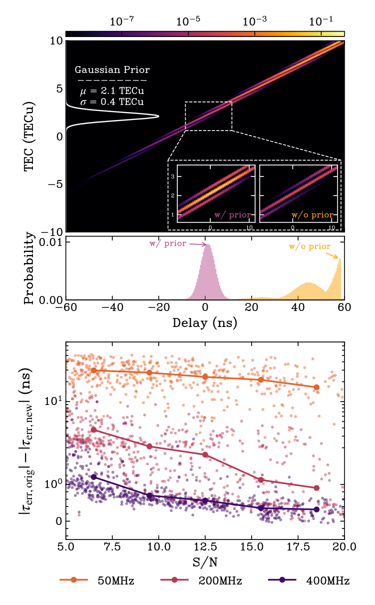
图注：由RFC样本Ib检验电离层先验的作用；缩短积分时间降低目标信噪比，在互相关可见度中屏蔽部分频带以降低带宽（详见第III节）。上部展示单个目标在双差分斜向电子柱与时延上的条纹后验，下方为对电子柱边缘化后的时延后验：黄色不含薄壳先验，紫色使用同场校准源同步观测给出的先验。下部比较50、200、400 MHz目标的时延误差改善量，即旧时延残差绝对值减去新值；叠加曲线为各信噪比分箱平均。窄带和低信噪比处的改善最大。
怎么看这张图：先看二维退化，再看边缘后验是否缩窄且接近真值；改善量为正表示残差减小。降带宽与降信噪比样本由同批快照生成，不能当作独立天空事件数。 直接支持本文核心结果及其证据边界。
来源与置信度：arXiv HTML；source verified；https://arxiv.org/html/2609.38344v1/ionosphere_improvement.png
图8：定位误差与后验覆盖率
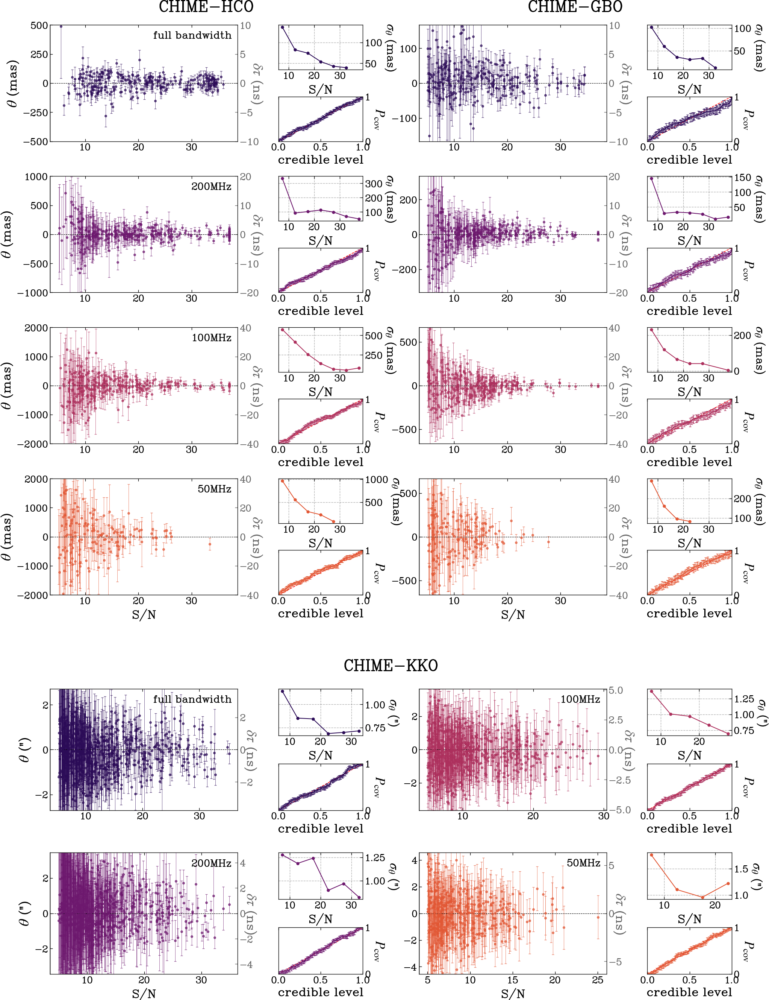
图注：上部CHIME–HCO（左）与CHIME–GBO（右）、下部CHIME–KKO测试定位的角偏差分布，不确定度来自条纹拟合后验。每组分布右侧上方给出不同信噪比分箱的平均天体测量误差，信噪比按附录A统计量定义。误差还依赖校准源与目标间距、目标信噪比的频率分布、两者频带重叠及射频干扰等。因后验常非高斯，覆盖率图比较落在指定可信区间内的实际源份额与理想份额；误差棒由8个随机子样本自助估计。结果与准确校准所对应的一比一关系相容。 主散点横轴为信噪比，纵轴为对应投影角误差；HCO/GBO以毫角秒、KKO以角秒表示。
怎么看这张图：角误差面板看精度，覆盖率面板看区间是否可信；二者缺一不可。样本内与一比一线相容不保证未经测试的极端频谱、天区或低信噪比事件同样校准。 直接支持本文核心结果及其证据边界。
来源与置信度：arXiv HTML；source verified；https://arxiv.org/html/2609.38344v1/figs/delay_vs_snr_full.png
强相关工作
本文参考文献中的CHIME/FRB Outriggers设计概述（arXiv:2504.05192）说明站点配置、基线和目标性能；Andrew等的600 MHz校准网格工作（arXiv:2409.11476）提供同场参考源密度与低频条纹搜索基础。当前论文的新增量是在此硬件和源网格上建立带共享噪声、幅度先验与电离层先验的联合定位流程，并以真实已知位置样本做覆盖率验收。关联依据是本文实际引用及方法叙述，此处不声称独立重跑这些前作。
作为科学应用对照，本文引用FRB 20250316A的13 pc精度定位（arXiv:2506.19006）及其JWST环境研究（arXiv:2506.19007）。它们展示明亮事件的环境信息价值，但单个亮源不能替代本工作对弱与窄带条件的误差检验。未来将两类工作结合时，需要同时考虑定位后验、宿主结构和被成功定位的选择概率，才能讨论FRB形成通道的族群比例。
同一事件 / 同类源线索：
相似工作：
基础理论 / 方法工作：
相反观点 / 张力线索：
（未提供）
2. NEXUS: Discovery of a Luminous Young Transient at $z=5$
- 来源：arXiv / astro-ph.HE
- 链接：https://arxiv.org/abs/2609.38373
- 作者：Ming-Yang Zhuang, Yue Shen, Lei Hu, Justin D. R. Pierel, Zhiwei Pan, Zachary Stone, Adam J. Burgasser, Xiaohui Fan
- 公告 / 来源日期：2026-10-01
- 阅读层级：重点精读
- 评分：novelty 8/10，importance 8/10，relevance 8/10，final 9.00/10
- 推荐理由：非透镜场z约5年轻暂现源扩展早期超新星观测窗口，但类型与爆发年龄仍需模板和后续数据检验。
中文题目：NEXUS在红移5非透镜场发现年轻明亮暂现源：可靠发现与待定超新星类型
做了什么：JWST的NEXUS巡天在2026年8月7日发现AT 2026abck，宿主发射线给出红移5.017±0.001。它在三个近红外波段约为27.4等，而71个观测者天前的F200W图像未检出；换算到源静止系，这意味着约11.8天内增亮超过1.4等。差分图像、多个曝光及独立宿主分解共同支持暂现源的真实性。
单温黑体拟合给出温度约1.7万K、半径约7×10的14次方厘米及总光度约3.1×10的43次方erg/s。非核位置、热的紫外连续谱和活跃恒星形成宿主支持核心坍缩超新星解释，但目前没有暂现源自身的分类光谱。4—10天爆发后年龄来自光度、尺寸和低红移模板的联合判断；正常II型、周围物质相互作用及上升期超亮超新星仍需后续区分。
为什么重要：在红移约5，近红外相机实际看到的是源的紫外与光学辐射。此前精细研究常借助星系团透镜放大，本次展示普通非透镜巡天也能在暂现源很年轻时捕获它，为研究早期大质量恒星死亡增加可实行的观测途径。贡献不等于已经测出高红移超新星发生率：这是一个候选事件，仍需控制亮度、节奏、宿主和分类选择效应。
理论 / 观测 / 仪器方法价值：本文最值得借鉴的是在只有少数波段、一次有效发现历元时如何组织证据：图像差分先证明变化，宿主发射线给距离，黑体把颜色与通量转成条件性尺度，再用几何位置和后续演化预言检验类别。F277W缺少同波段参考图，作者结合跨波段伪参考与独立多成分拟合，并保守处理相关噪声，这是避免宿主残差制造过精确结论的具体做法。
为什么应该关注：对暂现源和多波段跟踪而言，观测者两个月的节奏在红移5只对应约十个源静止系日，可以捕获早期热辐射，却仍不足建立完整光变。应优先看后续紫外是否降温变暗、光学是否进入平台或继续上升，再决定激波冷却、星周物质相互作用和超亮超新星模型的权重。此事件没有文中给出的高能或中微子关联，不应据核心坍缩候选身份自动附加多信使发现。
展开详细解读：文章讲解、背景、理论、重点章节、图表与相关工作
文章详细讲解
科学问题：高红移大质量恒星在怎样的环境中爆发、爆发前是否有强烈质量损失，需要早期辐射提供信息。但宇宙学变暗使这些事件很难被发现，发现后又往往只有稀疏的图像。本文首先要建立非透镜场中一个红移约5暂现源确实存在，然后评估现有数据能把它的物理类型限制到什么程度。
作者怎么做：将NEXUS早期参考图与第八次深场观测匹配点扩散函数后相减，在F150W、F200W和F277W测量新出现的点源，F444W给出上限。用宿主的氧与氢发射线确定红移，再对暂现源三个测量和一个未检出联合拟合黑体。空间上它位于宿主两部分之间，距较亮中心约1.1千秒差距，这使普通核活动解释较不自然。
关键结果：热而明亮的紫外谱难以由通常Ia型或普通剥离包层超新星早期辐射解释，核心坍缩相关的激波冷却或星周物质相互作用更合适。半径与速度量级、发现前未检出及温度演化比较一起指向爆发后约4—10天。这个年龄是带物理条件的估计，初始半径不为零、持续加热或上升期超亮超新星都会改变推断。
局限和下一步：宿主红移的高精度不意味着暂现源类型同样确定；离核位置也不能严格排除极暗卫星星系中的潮汐瓦解。下一步最直接的是多波段重复测光和深光谱：II型事件预计紫外快速变红、光学形成长平台，超亮超新星可能继续整体增亮，持续相互作用则维持高温较久。当前结果应作为跟踪目标与方法实例，而非已完成类型定论。
关键结果是怎么做出来的
第一环是发现可信度。NEXUS的宽场约400平方角分、深场约50平方角分，本文使用早期中央区域参考图与后续深场图像。科学图与参考图互相卷积对方的点扩散函数，差分后再对白化噪声处理；单波段候选需额外曝光或先前证据验证。注入测试给F200W与F444W的50%完备度约28.15和27.29等，但这不等同于本候选的单点检测显著性。
第二环是处理宿主污染。F277W没有爆发前的同波段图像，作者将F200W卷积、缩放生成伪参考；然而F277W含宿主强氧发射线，空间形态不必与连续谱相同。独立galfitm以一个点源和四个Sérsic宿主成分分解，得到相近的暂现源亮度。最后采用两种流量的均值，并令误差覆盖各自一西格玛范围，避免直接相信忽略相关噪声的拟合误差。
第三环是把距离证据与分类分开。宿主的[O III]5007和Hα在NIRCam无缝光谱中被识别，红移为5.017±0.001；Hβ仅约1.2西格玛，不能用巴耳末线比可靠约束尘埃消光。离核位置和宿主关联支持同一距离，但论文没有暂现源光谱，因此不能把宿主发射线当成超新星谱型证据。
第四环是少波段谱能量分布。F150W、F200W、F277W分别约27.36、27.38、27.37等，F444W大于27.87等为三西格玛未检出。黑体拟合通过正态累积分布纳入上限，并用后验分位数给温度、半径和总光度范围。三个波段近似平坦的每单位频率通量限制谱峰位置；长波未检出对过红模型有约束，却不能视为负通量或零误差的数据点。
第五环是物理分类与年龄。前次F200W大于28.78等意味着71观测者天内增亮超过1.4等。若此前尚未爆发，则最大源静止系年龄约12天；将黑体半径除以这一时间得到平均速度下限约7000 km/s。若要求不明显超过正常II型早期约2万km/s的量级，年龄过短又不合理。温度则在没有额外加热时偏好较早阶段，这些条件的交集形成4—10天判断，而非一条拟合直接测出的计时器。
第六环是环境对照。宿主恒星质量约10的9.8次方太阳质量，Hα对应未校正消光的形成率21±2太阳质量每年；SED给最近约1亿年平均14±3，两个量的时间窗口不同。与透镜超新星Eos相比，宿主质量相差约3.3个数量级，但两者观测波长、相位和放大误差不同，不能把原始紫外星等差当作无条件的本征光度比较。
展开背景、理论、公式、模型和章节导读
背景知识
核心坍缩超新星来自大质量恒星生命末期，早期光线可能主要来自被激波加热的包层向外膨胀并冷却，也可能来自抛射物撞上爆发前排出的星周物质。两种情形都可以热而明亮，但其持续时间与颜色演化不同。早期辐射因而同时包含恒星尺寸和近期质量损失的信息，不是只由最终爆炸总能量决定。
遥远宇宙的红移同时改变波长和时间。源在紫外发出的光到达JWST时成为近红外，源一天变化在观测者处被拉长为约六天。因此观测者两个月间隔在红移5具有早期暂现源科学价值。另一方面，宇宙学变暗仍使很多普通事件落在灵敏度以下，被发现样本必然偏向更亮的阶段或类型。
透镜放大能把原本不可见的远处超新星和暗宿主带入视野，却引入放大模型及多像时间延迟。非透镜场发现减少这项额外模型依赖，有利于将来测量更均一的样本；本事件仍需宿主扣除、测光校准和完备度修正，不能因此被视为没有选择偏差。
黑体是把连续谱颜色解释成有效温度、把通量解释成辐射面积的简化模型。超新星中的大量金属谱线可能压低紫外，尘埃也会使颜色变红；因此拟合温度不必等于某一层气体的真实温度，黑体半径也未必严格追踪同一物质壳。本文没有修正宿主消光，若采用宿主整体约0.2等的消光，温度和总光度会提高，但暂现源视线不一定等同宿主平均。
基础理论 / 方法脉络
观测从带通通量开始。AB星等比较每单位频率通量，不是直接比较总辐射功率；三个波段星等接近表示这一频段的通量密度近似平坦。理论谱必须经各滤光片响应积分后再与测量相比，否则宽带线污染和有效波长变化可能扭曲颜色解释。论文图3的红方块就是模型平均带通通量。
黑体谱的形状由温度控制，归一化由半径与光度距离的比值控制。给定宿主红移和宇宙学之后，蓝端测光及长波上限共同限制温度，再从整体流量得到有效半径。温度与半径通常相关，因此总光度的区间应由联合后验计算，不能将两者边际误差不加说明地独立组合。
用半径估计年龄需额外运动学假设。自由膨胀且初始尺度可忽略时，半径约等于速度乘时间；观测只有半径，没有谱线速度，因此论文借助邻近II型超新星的速度量级做条件判断。若发光面位于一个先前就很大的星周包层，初始半径不可忽略，同样大小不再要求同样长的爆发后年龄。
类型识别依赖多条物理条件的一致性。普通Ia型近紫外常受铁族谱线压低，普通Ib/c紧致前身早期激波冷却弱；热且明亮的本候选更偏向有扩展物质的核心坍缩情形。但Ibn/Icn相互作用型或上升期超亮超新星也可满足部分条件，单历元颜色难以排除。后续演化提供模型在当前历元之后的独立预测，价值大于仅增加一次相近波段的静态拟合。
公式与推导
下面以论文式1为核心，连接测光、辐射尺度与年龄。普朗克谱与总光度是作者采用的黑体模型；星等、时间伸长、上限似然和膨胀速度关系为标准教学展开，不能当作作者另行拟合的动力学模型。
先把观测波长和时间换到源静止系：
红移5.017使71个观测者天缩短为约11.8个源静止系天；1.5微米对应约2500埃。因此近红外颜色在这里约束的是紫外热谱，不能直接照搬近邻超新星的近红外比较。
AB星等可转成每单位频率的通量密度：
后一个关系使用同一F200W波段。旧图未检出只给通量上限，所以得到增亮倍数下限，而非完整上升曲线或爆炸时间的直接测量。
黑体比强度由普朗克函数给出：
这里h、c和玻尔兹曼常数采用与波长一致的单位，T为温度。比强度按面积、立体角和波长计量，需要几何投影和红移换算才能得到观测通量。
论文式1把有效半径与光度距离连接起来：
光度距离已包含宇宙学变暗因素，不可再重复加一次平方红移衰减。模型必须经滤光片响应平均；谱形主要限制温度，振幅与温度共同限制半径。忽略宿主消光或线压低时，得到的是这套简化模型的有效参数。
三个检测点和一个未检出波段的高斯近似似然可写为：
标准正态累积分布Φ表示落在检测阈值以下的概率，上限不应充当精确测量。此教学写法要求合适的噪声模型和独立性处理；图像相关噪声仍应进入测光误差。参数后验的16—84百分位不是超新星类型的置信度。
黑体半径和温度再给出总光度：
斯特藩—玻尔兹曼常数把面积和温度转成辐射功率。温度四次方使紫外形状误差尤其重要；总光度含未测波长外推，不能等同于三个检测波段通量相加。
若初始半径可忽略且近似自由膨胀，则有教学估算：
计算需将天转成秒。年龄若为4天，所需速度约2万公里每秒；这不是谱线多普勒实测速度。初始包层或星周物质半径不可忽略时，应加入初始半径，简单速度下限随之改变。
同样的时间伸长作用于未来平台期：
约600天是II型平台情景的观测预言，不是已经获得的平台时长。后续是否降温、是否保持光学平台或持续增亮，可以独立更新分类判断。
模型拟合 / 应用方法
测光输入为三个检测波段和一个三西格玛上限，红移由宿主光谱固定，并采用文中平直宇宙学参数。暂现源通量已校正银河消光，宿主消光没有直接加入。emcee采样温度和有效半径，再由每个联合后验样本计算总光度；正文报告的是相应分位数区间，没有提供足够信息在此宣称已复现全部链收敛诊断。
F277W是最重要的测光稳健性检查点。缺同波段参考时，F200W伪参考假定形态相似，而强[O III]会破坏它。作者选择暂现源位于两宿主成分之间、背景较低的条件，并与galfitm直接分解对照。两种测量一致提升可信度，但它们共享同一科学图像，不能当成两个独立仪器检出累加显著性。
宿主SED拟合与暂现源黑体拟合是不同模型。前者采用七波段、双幂律恒星形成史、星云发射和Calzetti消光，得到恒星质量、平均形成率及恒星金属丰度；后者仅刻画瞬时连续谱。特别要区分宿主恒星金属丰度约0.3太阳值与其他对象的气相金属丰度，不能把两种定义未经换算作精确倍数比较。
分类阶段没有进行完整爆炸模型的贝叶斯竞争。论文主要比较颜色、光度、空间位置及附近样本的演化量级，形成偏好的物理图像。4—10天不是严格联合模型的统计置信区间，额外加热可延缓降温，扩展初始半径可降低所需速度。后续应获得颜色随时间的轨迹及分类光谱，才能显著缩小这些退化。
用本文方法设计跟踪时，应将F444W平台检出所需的额外约1等深度与观测者约600天时标一起考虑。只重复原来深度可能持续得到上限，却不能排除较暗平台。候选选择与宿主识别同样要保留失败样本，未来若估算发生率，才有可能构造曝光、可见时间和完备度相结合的选择函数。
重点章节 / 结果段落怎么读
-
第II节与图1先确认参考图、检测历元和差分策略，尤其区分单波段候选验证和完整样本的注入完备度。
-
第III节及图2检查F277W伪参考假设、宿主多成分拟合和误差合并；这决定三个近似平坦波段是否可信。
-
第III节式1与图3看上限怎样进入黑体后验，随后把半径、温度、光度的物理条件连起来。
-
第IV节与图5分别读宿主发射线红移和宿主SED，注意Hβ不显著、Hα与SED形成率的时间平均窗口不同。
-
第V.1—V.2节和表2辨别分类支持、年龄条件及与SN Eos的可比范围；最后读结论中的后续观测预言，而非把预言写成已有事实。
关键图表与解读
图1：AT 2026abck 的发现图像
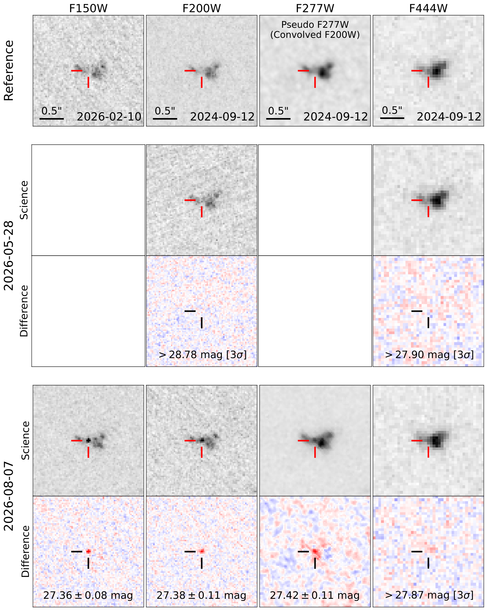
图注：红移5.017暂现源的NIRCam发现图像。各列依次为F150W、F200W、F277W和F444W；从上到下为爆发前参考图、2026年5月28日Deep Ep07科学图及差分图、8月7日Deep Ep08科学图及差分图。F277W参考图由F200W图卷积至F277W点扩散函数并按宿主通量缩放。差分面板列出点扩散函数测光结果或3σ上限；红、黑十字标记暂现源。
怎么看这张图：先逐列比较五月与八月差分，再看四个波段是否一致支持新源。F277W使用跨波段伪参考，其宿主颜色假设需要额外检查；F444W仍是未检出上限。 直接支持本文核心结果及其证据边界。
来源与置信度：arXiv HTML；source verified；https://arxiv.org/html/2609.38373v1/discovery.png
图3：发现历元的黑体拟合
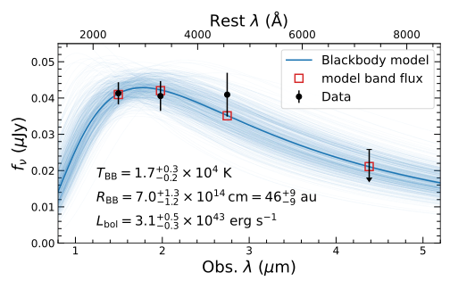
图注：黑点为AT 2026abck发现历元的谱能量分布，误差棒为1σ，下箭头为3σ上限。粗蓝线为模型中位数，淡蓝线为500次后验抽样模型；红方块为各带通内平均模型通量。左下给出最佳拟合参数及16—84百分位区间，其中T、R和总光度分别为黑体有效温度、球面半径和全波段光度。 下横轴为观测波长（微米），上横轴为静止系波长（埃），纵轴为每单位频率的通量密度（微央斯基）。
怎么看这张图：三个检测点约束热谱颜色与尺度，长波上限帮助限制低温解。拟合良好支持热辐射描述，不能仅靠这一历元把暂现源确定为某一种超新星。 直接支持本文核心结果及其证据边界。
来源与置信度：arXiv HTML；source verified；https://arxiv.org/html/2609.38373v1/BB_fit_SED.svg
强相关工作
NEXUS总体设计（arXiv:2408.12713）以及首年暂现源搜索（arXiv:2609.06985）是本文直接引用的同巡天背景：前者定义观测覆盖与节奏，后者提供差分与候选处理程序。Hu与Wang的JWST图像匹配方法（arXiv:2309.09143）则对应互卷积和差分噪声处理。本文利用这些已经建立的方法提出新的远距目标，不能将全部测光算法都计作本论文原创。
物理比较来自本文引用的早期II型超新星紫外样本（Irani等，arXiv:2310.16885）和具有星周物质相互作用的II型样本（arXiv:2403.02382）。这些资料为温度、半径、速度和持续加热量级提供参照，但把邻近样本迁移到高红移仍是条件假设。SN Eos在本文表2提供同红移对照，其透镜放大、晚平台光谱与早期远紫外测量和本次并不同相；本笔记只沿用本文可核对的对照，不声称重新独立分析Eos原始数据。
同一事件 / 同类源线索：
相似工作：
基础理论 / 方法工作：
相反观点 / 张力线索：
（未提供）
相关简报
1. Cosmic-neighbor-associated distances to VHE and candidate VHE BL Lacs via SDSS photometric redshifts
- 来源：arXiv / astro-ph.HE
- 链接：https://arxiv.org/abs/2609.38330
- 作者：Karri I. I. Koljonen, Elina Lindfors
- 公告 / 来源日期：2026-10-01
- 阅读层级：相关简报
- 评分：novelty 7/10，importance 7/10，relevance 10/10，final 9.05/10
- 推荐理由：VHE BL Lac邻域红移候选影响EBL推断；16个对照源中最近群命中7个，群归属不是直接红移测量。
中文题目：用周围星系群估计 BL Lac 红移：可用于候选排序，仍须光谱确认
问题、方法与结论：BL Lac 光谱常缺少可测谱线，作者以 SDSS DR19 中源周围两角分内星系的测光红移及其误差，构造异方差高斯混合模型，再按群中心与耀变体的角距离排序。16 个已知红移对照源中，最近群给出正确归属的仅 7 个；另三个多目标光谱检验场有两个符合。对 PKS 0735+178，邻近星系的光谱支持约 0.64–0.65 的候选群红移，但没有直接测得耀变体自身红移。
意义与贡献：工作提供了缺谱线源的一条环境约束途径，能帮助安排后续观测，并提示采用历史吸收下限 0.424 作为该源精确距离会低估不确定性。贡献主要是可检验的群归属线索，尚不能据此宣称确定了高能辐射光度或河外背景光吸收量。
可借鉴之处：值得借鉴的是把各星系不同的测光误差纳入混合模型，以已知源和后续光谱检验实际成功率；同时保留多个群作为距离候选。在伽马射线谱建模时，可传播候选距离及归属不确定性，而非用最近群给出单一固定红移。
局限与关注点：7/16 是该对照样本的归属命中率，不是所有估计的误差或校准后的关联概率。投影星系群、低红移两角分孔径过小、高红移暗成员漏检都会影响判断。PKS 0735 的约 0.8 伽马谱距离还依赖内禀截止与内部吸收；仍需宿主或明确群成员证据。 原图群I标0.615，与正文近似值不完全一致，不能据此赋予精确群红移。
图2：PKS 0735+178 周围的星系红移分布
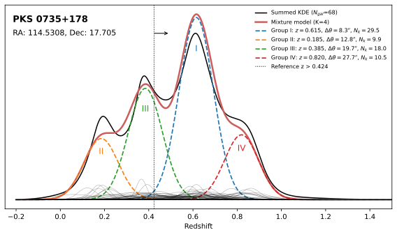
图注：PKS 0735+178视场内SDSS星系的红移分布。黑线为各星系核密度估计的和，红线为总高斯混合模型，彩色虚线为分群；图例列群平均红移、与目标的角距离和有效成员数。竖点线及箭头标历史吸收下限z>0.424。图内最近群I标z=0.615，正文及原图注则讨论约0.64、邻近光谱0.65，口径未完全一致；均不是耀变体自身谱线红移。
怎么看这张图：分布峰来自周围星系而非耀变体谱线。图中的群中心距离排序应与邻近星系光谱及已知吸收下限联合使用；最近的测光红移峰仍可能是投影结构。 直接支持本文核心结果及其证据边界。
来源与置信度：arXiv HTML；source verified；https://arxiv.org/html/2609.38330v1/photoz_mix_PKS_0735+178.svg
2. HESS J1507-622: A Plausible Young Galactic Kilonova Remnant
- 来源：arXiv / astro-ph.HE
- 链接：https://arxiv.org/abs/2609.38341
- 作者：Prantik Sarmah, Xilu Wang, Myles Carley, Shu-Xu Yi, Ming-Yu Ge, Rebecca Surman
- 公告 / 来源日期：2026-10-01
- 阅读层级：相关简报
- 评分：novelty 7/10，importance 7/10，relevance 10/10，final 9.05/10
- 推荐理由：为HESS J1507提出轻子千新星遗迹并给出MeV检验；拟合可行性不等于源类别识别。
中文题目：HESS J1507−622能否是千新星遗迹？轻子模型的可行区与独立检验
问题、方法与结论：作者针对偏离银道面约3.5度、缺乏明确射电或X射线对应体的TeV源，检验中子星并合遗迹解释。采用低密度环境、对数抛物电子谱和GAMERA辐射计算，以逆康普顿散射拟合既有Fermi与HESS能谱，并将角尺寸与喷出物能量同时用于筛选模型。0.2、0.5、1和3千年的示例可满足伽马与低能约束；较低电子加速效率使较老模型空间快速缩小。表1的3.8—14.3千秒差距是不同假定年龄的参数密度峰位置，不是测距置信区间，完整允许范围可延伸至20千秒差距。
意义与贡献：贡献是把早先因强子能量需求受质疑的千新星解释改为可计算的轻子方案，并给出放射性r过程核素MeV辐射这一较有区分力的检验。谱形相容本身仍无法区分千新星遗迹、脉冲星风云和超新星遗迹。
可借鉴之处：可借鉴角尺寸—距离—能量联合约束与多波段上限筛选。图3保留原始数据、同步辐射弱磁场带和核衰变预报，可用于检查哪些波段真正增加类别区分力；MeV可探测性是未来任务灵敏度下的条件预测。
局限与关注点：低密度及0.5—1微高斯磁场是重要假设；低能候选被保守视作上限。文中距离端点、图3颜色及面板文字有不一致，应以表格和原图核对。光回声与尘埃亮度是依赖尘埃几何的估算，非保证可见；中微子预报另需尚未发现的密云，不能作为当前轻子模型已预测的伴随信号。
图2：千新星遗迹解释的参数空间
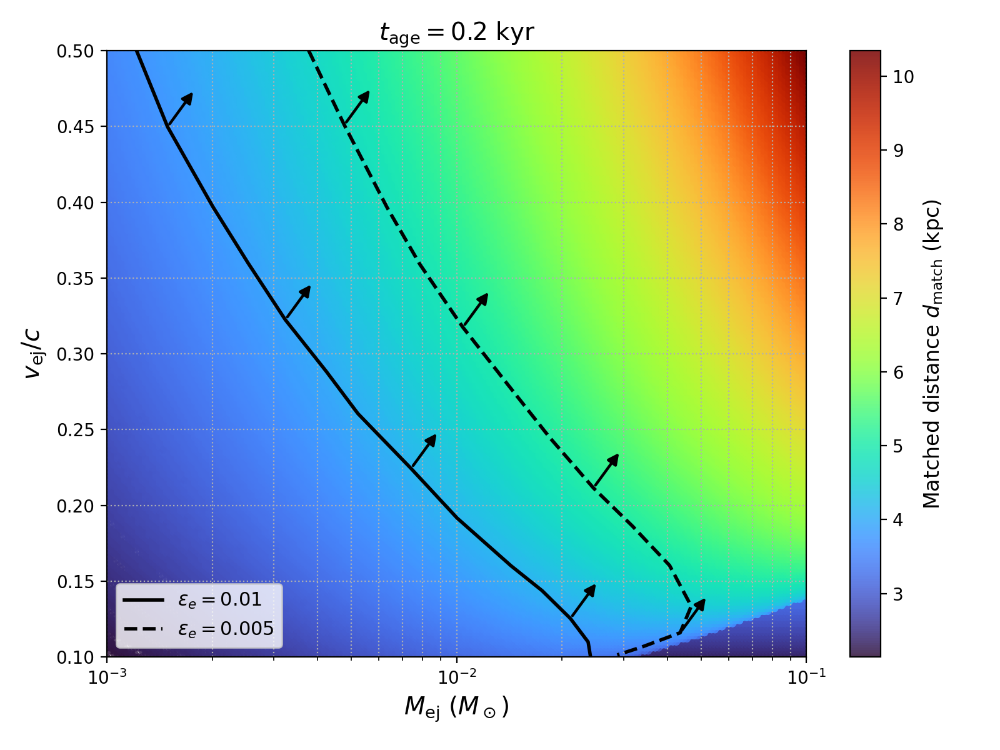
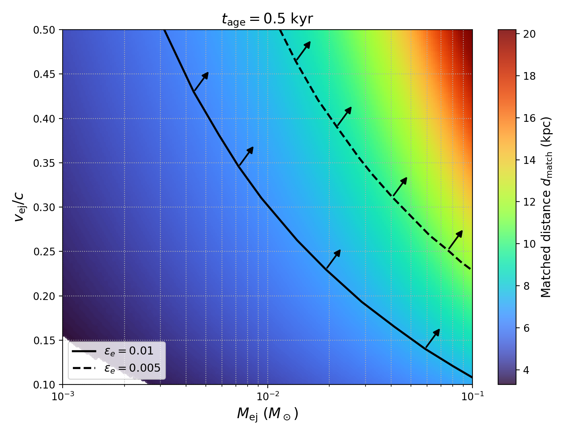
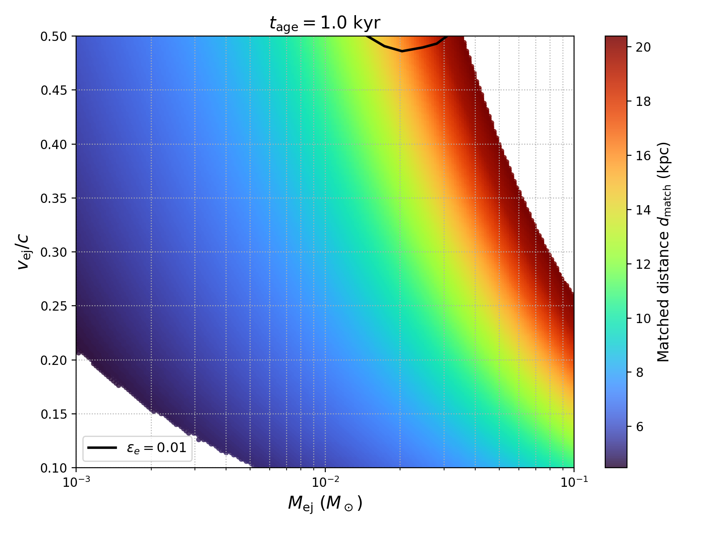
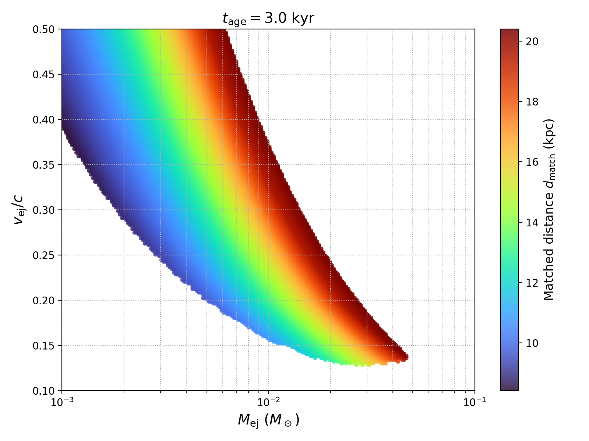
图注：在不同遗迹年龄下，由HESS J1507−622角尺寸和最低抛射能量条件限制的抛射质量–速度参数空间。能量条件为不低于2×10^50 (d/10 kpc)²(电子效率/0.1)⁻¹ erg。色图对应电子效率0.1，黑实线和黑虚线及箭头分别表示效率0.01和0.005的允许区域。随年龄增加空间迅速缩小：低效率时1 kyr只余很小区域，3 kyr时不再有允许解。 四面板年龄依次0.2、0.5、1、3 kyr；横轴为太阳质量单位的抛射质量，纵轴为抛射速度与光速之比，色条为匹配距离（kpc）。
怎么看这张图：这张图展示模型能量与形态约束如何共同筛参数，不是年龄或距离的观测置信区间。色图中的高效率解存在，不足以确认该无对应体源就是并合遗迹。 直接支持本文核心结果及其证据边界。
来源与置信度：arXiv HTML；source verified；https://arxiv.org/html/2609.38341v1/Mej_vej_parameter_space_0.2kyr_dynamic_Emin.png；https://arxiv.org/html/2609.38341v1/Mej_vej_parameter_space_0.5kyr_dynamic_Emin.png；https://arxiv.org/html/2609.38341v1/Mej_vej_parameter_space_1.0kyr_dynamic_Emin.png；https://arxiv.org/html/2609.38341v1/Mej_vej_parameter_space_3.0kyr_dynamic_Emin.png
3. Chandra X-ray Spectral Evidence of the Dual AGN Nature of the Gravitational lens MG B2016+112 at z=3.273 with 175 pc separation
- 来源：arXiv / astro-ph.HE
- 链接：https://arxiv.org/abs/2609.38590
- 作者：Daniel A. Schwartz, Julia M. Sisk-Reynes, Anna Barnacka
- 公告 / 来源日期：2026-10-01
- 阅读层级：相关简报
- 评分：novelty 7/10，importance 8/10，relevance 9/10，final 9.05/10
- 推荐理由：175ks钱德拉吸收谱为175pc双AGN提供新增诊断；延续既有透镜与VLBI识别，创新性主要在新证据。
中文题目：钱德拉吸收谱加强175秒差距高红移双AGN解释
问题、方法与结论：MG B2016+112位于红移3.273，此前透镜与VLBI重建已指向相隔175秒差距的两处发射区，但高放大喷流结仍是替代解释。作者新增175千秒观测、有效曝光约165千秒，分别分析高放大像C及A+B，共139与167个光子。在固定银河吸收、加入源红移吸收的幂律模型中，C像需要明显内禀吸收：文中给出柱密度三西格玛下限为每平方厘米4×10的22次方，相对无内禀吸收拟合的统计量改善10.5；结合另一源既有II型AGN光谱，作者据此支持双AGN。
意义与贡献：真正新增的是两处发射区各自的X射线谱诊断，而非再次确认天空上存在多幅透镜像。它将简单未吸收喷流结解释压缩，提供宇宙正午紧致双AGN的实例；175秒差距仍为透镜模型下的投影间距，不能直接推出已形成束缚双黑洞或合并时标。
可借鉴之处：低计数下采用未分箱Cash统计，并逐观测保留相应响应，避免展示用16光子分箱决定拟合。联合看光子指数与吸收柱的退化比单列最佳值更可靠；源1、2放大约350与2，表观通量近似相等不代表本征亮度相近。
局限与关注点：文中3.2西格玛来自其似然比标定，不是对全部双AGN替代情景的排除概率；吸收位置与喷流环境解释仍含物理假设。源2吸收增加仅改善1.3，不显著。表2与正文源2最佳柱密度为19或22的差异、结尾红移3.237笔误均不用于主要论断，统一采用标题与观测红移3.273。
图3：两个引力透镜 X 射线源的吸收谱模型
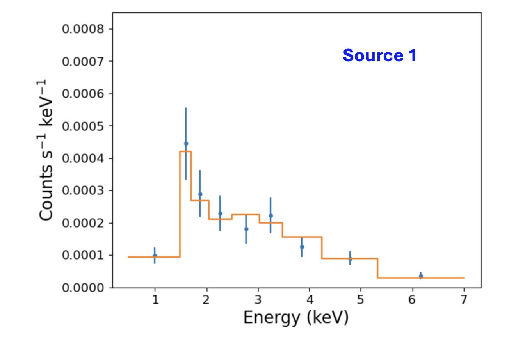
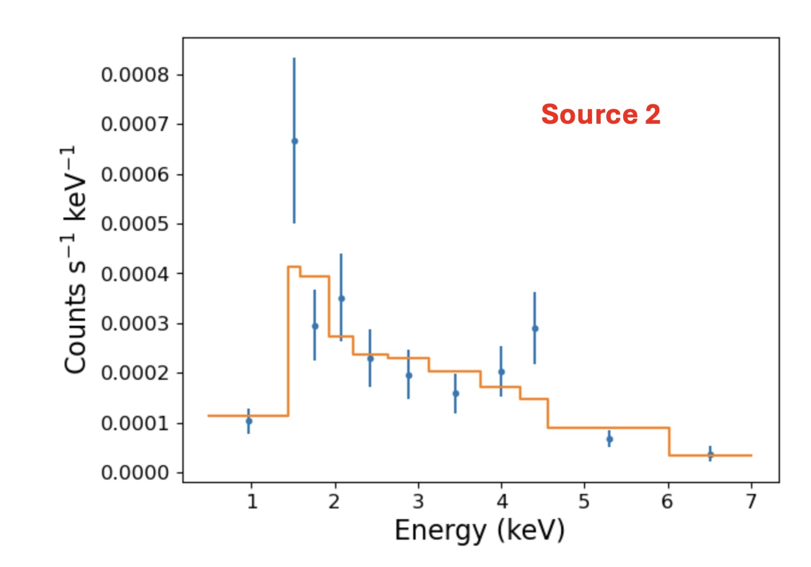
图注：橙色直方线为幂律加银河吸收、再加红移3.273源内吸收的模型，已卷积望远镜及探测器响应。横轴为观测能量；仅为显示，数据按每能量通道16个计数重分箱，1σ误差取计数平方根。橙线给每个分箱预测的每秒每keV计数率，并标明各点能宽。左：源1，光子指数2.54±0.21，氢柱密度72×10²² cm⁻²；右：源2，光子指数1.46±0.18，氢柱密度19×10²² cm⁻²。
怎么看这张图：正式拟合使用未分箱Cash统计量，图上的显示分箱不能代替似然检验。源1的内禀吸收较有支持，源2吸收改善很弱；图注的源2柱密度19与正文22存在差别，勿赋予额外精度。 直接支持本文核心结果及其证据边界。
来源与置信度：arXiv HTML；source verified；https://arxiv.org/html/2609.38590v1/sumCabsorbedRevF.jpg；https://arxiv.org/html/2609.38590v1/sumABabsorbedRevE.jpg
4. Revealing the accretion disc structure in Changing State AGN: NGC1566
- 来源：arXiv / astro-ph.HE
- 链接：https://arxiv.org/abs/2609.38322
- 作者：Huimei Wang, Chris Done, Riccardo Middei, Xue-Bing Wu
- 公告 / 来源日期：2026-10-01
- 阅读层级：相关简报
- 评分：novelty 7/10，importance 7/10，relevance 9/10，final 8.70/10
- 推荐理由：宿主扣除的NGC1566多波段谱演化分离暖成分和外盘，提供变态AGN吸积结构约束，伴星解释未证实。
中文题目：NGC 1566 变脸过程：分离宿主后追踪盘、暖冕与宽线区响应
问题、方法与结论：作者结合 2018 年爆发后的 Swift 光变、XMM–Newton 谱与光学资料，追踪 NGC 1566 从高态向低态演化。扣除宿主后，以 AGNSED 分解冷盘、暖康普顿化区和热冕，发现紫外与软 X 射线成分在约百分之一爱丁顿比附近显著减弱；Cloudy 模型表明同一宽线区在照明变弱时可失去显著宽线，无须假设气体整体消失。
意义与贡献：价值在于把变脸现象连接到电离连续谱和吸积结构的变化，并指出光学波段同时混有盘本征辐射、再处理及宽线区弥散连续谱。仅凭单波段变暗，不能直接推断吸积率或宽线区物质减少。
可借鉴之处：作者发现固定颜色的通量–通量宿主扣除会产生负的活动核通量，转而用最暗五个 UVW2 历元约束宿主上限，并把两种方法差异作为系统误差。对长期多波段分析，这个检查能揭示颜色演化如何传入谱能分布和组分拟合。
局限与关注点：质量、自旋、倾角及热冕温度等有固定设置，低态稀疏资料还需冻结部分参数，约百分之一的状态边界不是独立精密测量。Cloudy 的密度、柱密度和覆盖因子为假设，约 1.7 天响应尺度属预测。复发耀斑不能确认轨道周期，文中的中等质量黑洞伴星仅为候选解释。
图3：NGC 1566 光变与谱组分演化
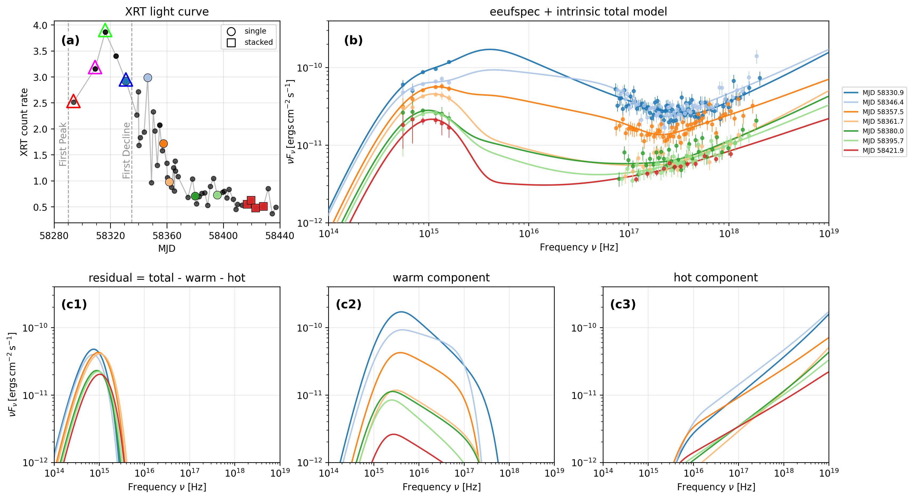
图注：MJD 58280—58440期间的XRT光变及宽带谱能量分布组分。(a)为Swift/XRT光变，彩色标出用于谱拟合的历元；(b)为对应UVOT/XRT观测谱及最佳拟合AGNSED总模型；(c1)—(c3)把模型拆为冷盘、暖区和热区。 光变横轴为MJD、纵轴为每秒计数率；谱图横轴为频率（Hz）、纵轴为νFν（erg cm⁻² s⁻¹）。
怎么看这张图：比较相同颜色的光变点与各组分曲线，可看出紫外和软X射线为何不只是整体缩放。组分是依赖宿主扣除和固定参数的模型分解，并非独立分辨出的三个空间区域。 直接支持本文核心结果及其证据边界。
来源与置信度：arXiv HTML；source verified；https://arxiv.org/html/2609.38322v1/lightcurve_totalSED.png
5. HLX-1 as a Repeating Partial Tidal Disruption Event around an Intermediate-Mass Black Hole
- 来源：arXiv / astro-ph.HE
- 链接：https://arxiv.org/abs/2609.38694
- 作者：Fangyuan Yu, Andrew Mummery, Muryel Guolo
- 公告 / 来源日期：2026-10-01
- 阅读层级：相关简报
- 评分：novelty 7/10，importance 7/10，relevance 9/10，final 8.70/10
- 推荐理由：跨爆发共用盘参数加HST谱约束HLX1燃料与盘尺度，支持重复剥离但机制比较仍有限。
中文题目：HLX–1 多次爆发的黏性盘拟合：支持重复供料，轨道解释仍有缺口
问题、方法与结论：作者把 HLX–1 多轮 Swift 软态光变与第三轮同时 HST 光谱能量分布联合拟合，用相对论薄盘中的有限质量环扩散描述每次爆发。共享黑洞与几何参数后，得到黑洞质量对数约 4.5±0.2（太阳质量单位），盘形成半径对数约 3.8±0.3（引力半径单位）；各轮改变注入质量和黏性时间即可描述软态主体。
意义与贡献：结果把光变宽度、供料量及紫外所限制的外盘尺度联系起来，为重复部分潮汐剥离提供一致性证据。但共享半径主要由有 HST 的第三轮决定；其他历元单独放开半径后多受先验控制，不能当作七次独立测出相同角动量。
可借鉴之处：可借鉴跨历元共享参数、各轮保留供料与时间参数的建模思路，以及用硬度划分模型适用的软态窗口。作者另将相邻爆发间隔拆成轨道周期和成盘延迟之差，这对解释重复暂现源的计时漂移尤其有用。
局限与关注点：似然按各历元点数归一，误差属于这种加权模型；旧盘残余约占峰值 15%–20%，只在后验展示叠加而未进入本次似然。近爱丁顿峰值挑战薄盘假设，硬态骤降未被拟合。将半径映为圆化尺度、以浅掠剥离公式估算约半太阳质量供体均有模型依赖，末次间隔倍增和此后沉寂尚未解释。
图8：共享与逐历元盘形成半径的比较
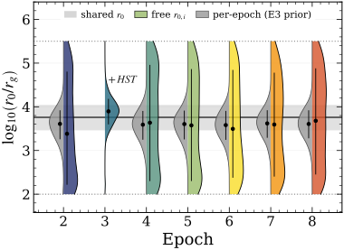
图注：按历元比较三种盘形成半径处理。灰带和实线为基准全历元共享半径的68%可信区间与中位数。每轮左侧灰色半小提琴为独立拟合，采用第三轮全局参数边缘分布的一维核密度估计作为先验；第三轮定义这些先验，因此无左半图。右侧彩色半小提琴为联合拟合但每轮半径独立、log10(r0/rg)在2.0—5.5均匀先验的结果，点线标先验边界，小提琴止于边界。黑点与棒为中位数及16—84百分位。第三轮是唯一有同期HST谱能量分布的历元。
怎么看这张图：关键是有HST的第三轮明显约束半径，其余宽后验说明X射线单独难以测外盘尺度。没有发现逐轮趋势不等于已独立证明半径恒定，左侧结果还继承第三轮的先验信息。 直接支持本文核心结果及其证据边界。
来源与置信度：arXiv HTML；source verified；https://arxiv.org/html/2609.38694v1/fig_r0_violin.svg
6. XRISM Resolve Spectroscopy of GX 5-1: Constraints on Iron Spectral Features in a Luminous Neutron-Star Binary
- 来源：arXiv / astro-ph.HE
- 链接：https://arxiv.org/abs/2609.39842
- 作者：Tasuku Hayashi, Shinya Yamada, Shun Inoue, Teruaki Enoto, Noriko Yamasaki, Shunji Kitamoto, Shogo Kobayashi, Yusuke Sakai
- 公告 / 来源日期：2026-10-01
- 阅读层级：相关简报
- 评分：novelty 7/10，importance 7/10，relevance 9/10，final 8.70/10
- 推荐理由：Resolve微量热器把GX5-1铁线限制推进到数eV，对近爱丁顿吸积流具有具体诊断价值。
中文题目：XRISM 对 GX 5–1 铁窄线给出亚电子伏特等效宽度上限
问题、方法与结论：XRISM/Resolve 对 GX 5–1 的约 51 ks 水平分支观测未发现显著铁发射或吸收窄线。作者用盘黑体加单温黑体拟合连续谱，再以仪器分辨率匹配的滤波器扫描谱线，并对平均谱和三个时间段各模拟一万条无谱线谱。固定线能量与零内禀宽度时，6.40、6.70、6.97 keV 三条线的平均谱 3σ 等效宽度上限分别约 0.663、0.634、0.630 eV。
意义与贡献：高分辨率下仍缺少窄线，使过去“连续谱主导”的认识得到更严格检验，为高电离、几何稀释及反射较弱等解释提供边界。该上限约束指定的未分辨谱线，不能外推成任意宽度、速度或任意吸积状态下都没有盘风。
可借鉴之处：值得采用的是把重分箱后视觉上可疑的起伏与原始分辨率上的定量搜索分开，并让无信号模拟经过同一响应和滤波流程。三个时间段均在水平分支内部，避免把连续谱变化误解为跨越三条 Z 分支。
局限与关注点：扫描中的约 3σ 起伏属于局部偏离，不能视为全局发现；文中能量逐点包络也不等于公布了完整最大统计量分布。上限依赖连续谱及固定线宽，观测只覆盖一种状态。硫、铁吸收边的不同模型比较尚不足以测出尘埃耗尽率或确认 XAFS，正文“几十秒”与数据划分的几十千秒不一致。
图5：GX 5–1 的匹配滤波窄线搜索
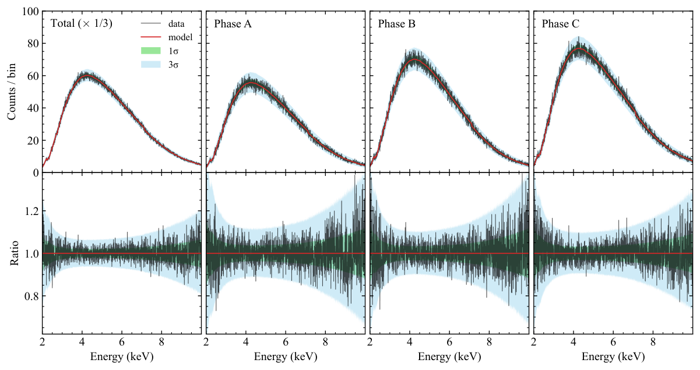
图注：最左列为XRISM/Resolve时间平均谱，其后依次为A、B、C三个时间段。每列上部给观测谱（黑）与最佳连续谱模型（红），下部为数据与连续谱的比值。绿、蓝色带分别表示连续谱零假设下用相同匹配滤波程序估计的±1σ与±3σ统计起伏范围。 横轴为能量（keV），上部纵轴为每箱计数；时间平均谱为便于比较缩小至三分之一。
怎么看这张图：局部接近3σ的起伏并非全能段搜索后的发现。阅读时应把能量逐点包络与表2固定线能量、零内禀宽度的等效宽度上限分开；三个时间段都是水平分支内部。 直接支持本文核心结果及其证据边界。
来源与置信度：arXiv HTML；source verified；https://arxiv.org/html/2609.39842v1/fig5.png
7. New Constraints on $r$-process Nucleosynthesis in Neutron Star Mergers from GW170817 Late-Phase Spectra
- 来源：arXiv / astro-ph.HE
- 链接：https://arxiv.org/abs/2609.38682
- 作者：Salma Rahmouni, Masaomi Tanaka, Daiji Kato, Gediminas Gaigalas, Kenta Hotokezaka
- 公告 / 来源日期：2026-10-01
- 阅读层级：相关简报
- 评分：novelty 8/10，importance 7/10，relevance 8/10，final 8.65/10
- 推荐理由：GW170817晚期谱联合La/Ce/Te及未检出线把重元素图样落实到丰度条件约束，须核查非LTE与辐射场退化。 全文复核：两能级近似、未自洽非LTE和辐射场限制使La/Ce只属暂定；式2与III.3碰撞系数、IV.1 La/Ce比值存在内部书写不一致，量化丰度可靠性不足精读重要性8门槛，改简报。
中文题目：GW170817晚期红外谱：重元素识别与丰度的条件边界
问题、方法与结论：作者用两能级碰撞激发模型扫描重元素允许线与禁线，再用HULLAC及已有R矩阵数据细化重要跃迁，比较并合后7.4—10.4天的VLT及9.4天HST光谱。La III、Ce III和Te III分别是1.4、1.6、2.1微米特征的优选贡献者。假定喷出物0.05太阳质量、电子温度等于拟合黑体温度及给定电子密度，作者报告Te质量分数0.04—0.08；Kr不超过0.03、Sb不超过0.003。La与Ce数值被作者明确列为暂定，图中范围并非统计置信区间。
意义与贡献：将候选线位置、其他本应出现而未见的线及不同历元衰减联系起来，比只找相近波长更有约束力。Te到总镧系比例0.03—0.06的外推另假定重元素相对比例服从太阳r过程图样；它不是对全部镧系元素质量的直接求和测量。
可借鉴之处：可借鉴利用临界密度区分谱线的时间响应：低密度极限的La/Ce发射随电子密度变化，高密度极限的Te禁线在其他条件固定时对密度较不敏感。未检出线还能检查电离态与元素混合，但必须传播原子数据及地球大气吸收带的不确定性。
局限与关注点：两能级近似缺少多能级级联和自洽非LTE。正文式2碰撞系数为8.629×10的负6次方，III.3却写8.6×10的负4次方；La/Ce比值在III.3为0.5、IV.1为0.05。无法由文本判断是否仅排版错误，故不复算或背书绝对丰度。辐射激发、温度、团块和电离态仍会改变数值；单事件不能证明所有r过程来源。
图9：AT 2017gfo 元素丰度的条件性约束
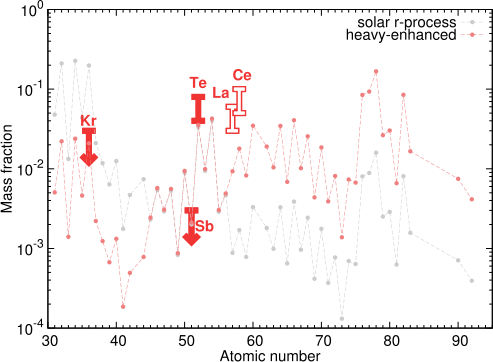
图注：本文推得的元素丰度约束汇总。La和Ce受辐射场不确定性影响，属于暂定约束，用空心符号表示。灰色和红色分别为太阳r过程与重元素增强的丰度模式。误差棒表示分析中推得的质量份额范围，而不是统计不确定度（详见第IV.3节）。
怎么看这张图：先区分Te较稳健的线识别与La/Ce候选，再看质量份额对辐射场及碰撞率的条件依赖。不能把范围棒解释成一西格玛，也不能把基于Te和假设丰度模式外推的镧系份额当作直接求和测量。 直接支持本文核心结果及其证据边界。
来源与置信度：arXiv HTML；source verified；https://arxiv.org/html/2609.38682v1/abund_constraints.svg
8. Not So Heavy Metal I: Low Metallicity Enhances the Rate of high-redshift Superluminous Supernovae
- 来源：arXiv / astro-ph.HE
- 链接：https://arxiv.org/abs/2609.38299
- 作者：Ben Margalit, Allison L. Strom, Cristina Andrade, Michael W. Coughlin, Adam A. Miller, Steve Schulze, Ved G. Shah
- 公告 / 来源日期：2026-10-01
- 阅读层级：相关简报
- 评分：novelty 7/10，importance 7/10，relevance 8/10，final 8.35/10
- 推荐理由：区分O/H与Fe/H并卷积金属丰度分布，高红移超亮超新星率预测有用，但仍受产生效率假设限制。
中文题目：低金属丰度可能提高高红移超亮超新星率：铁与氧需要分别处理
问题、方法与结论：作者把星系质量函数、恒星形成主序和金属丰度关系联合积分，估计能产生 I 型超亮超新星的低金属丰度恒星形成份额。以 37 个低红移宿主的质量分布选取约 0.2 倍太阳铁丰度阈值，并在红移 0.17、每立方吉秒差距每年 35 次的观测率归一后，模型预言高红移率可比单纯追踪恒星形成率高约一个数量级，峰值约在红移 3.3。
意义与贡献：有用之处是区分易测的气相氧丰度和影响恒星风、演化的铁丰度：两者受核心坍缩与 Ia 型超新星富集时标影响，不随宇宙时间同步变化。模型还预言高红移事件可出现于更大质量宿主，提醒分类器不要固守本地矮星系先验。
可借鉴之处：这套“形成率乘环境合格份额”的框架可迁移到其他偏好特定环境的暂现源，但需重新指定效率和延迟时间。作者将金属阈值先与宿主分布比较，再与高红移率比较，提供了不同观测量间交叉检验的思路。
局限与关注点：铁阈值没有经过含选择效应的正式统计拟合，不能称为精密测量；基本金属关系的散布、红移演化及星系整体与局部环境差异未充分处理。高红移对照仅两三个事件，部分混合 I/II 型；率的提高也不等于实际检出数同比增加。正文对对数正态均值的简化需数值实现核验，本文未复算代码。
图3：超亮超新星体积发生率随红移的预测
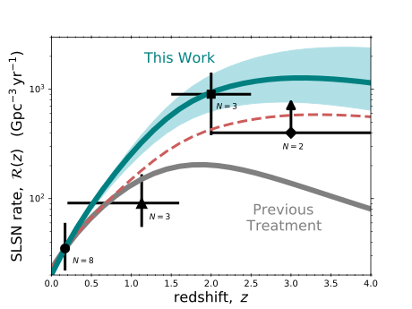
图注：黑点及误差棒为观测率，旁列用于估率的事件数N；菱形、三角、方形、圆形分别来自Cooke、Prajs、Moriya和Frohmaier等。所有模型在红移0.17黑圆点处归一。灰线假定发生率无偏追踪宇宙恒星形成率密度；蓝实线为铁丰度阈值0.2倍太阳值的基准模型，红虚线为氧阈值0.6倍太阳值的比较模型。低丰度形成份额f(z)随红移升高，使计入金属丰度的高红移率更高。纵轴为每立方吉秒差距每年的事件率。
怎么看这张图：所有线共用低红移锚点，不能把该处重合算作独立验证。正文给观测误差为68%区间，高红移样本很小且部分混合两类超新星；图展示概念模型预测，不是未来巡天检出数。 直接支持本文核心结果及其证据边界。
来源与置信度：arXiv HTML；source verified；https://arxiv.org/html/2609.38299v1/Rate_redshift.svg
9. Improved Population and EOS Joint Inference for Binary Neutron Star Systems
- 来源：arXiv / astro-ph.HE
- 链接：https://arxiv.org/abs/2609.39057
- 作者：Marc Ebiri, Richard O'Shaughnessy
- 公告 / 来源日期：2026-10-01
- 阅读层级：相关简报
- 评分：novelty 7/10，importance 7/10，relevance 8/10，final 8.35/10
- 推荐理由：EOS与质量族群联推及先验边界诊断实用；结果总体与此前一致，属于有用方法增量。
中文题目：联合推断中子星种群与状态方程：先验边界会裁掉物理解
问题、方法与结论：作者扩展 HyperPipe，使双中子星质量分布与四参数谱展开状态方程联合推断，输入 11 对银河系双中子星、GW170817、重脉冲星及 X 射线质量–半径等约束。旋转强相关参数空间并反射越界探索点后，初轮物理解比例从约 1% 提到约 80%；进一步扩大先验范围，发现传统笛卡尔边界排除了部分求解器允许的状态方程。
意义与贡献：主要价值在计算效率和先验敏感性诊断。质量分布中心约为 1.39、1.27 个太阳质量，共同宽度约 0.08；这属于质量排序后采用截断二维高斯的结果，不能据此确认两个独立形成种群。只有一个引力波事件时，种群模型对状态方程的影响仍较小。
可借鉴之处：可借鉴先将各数据因子单独测试，再逐项移除检查约束来源，并同时展示先验支持区域和后验。变换坐标本身可提高采样效率，但扩大边界会改变先验支持，两种操作对结果的作用必须分别说明。
局限与关注点：分析忽略种群选择效应，把既有 X 射线后验近似为高斯似然，重复使用 J0740 的质量信息还需核查共同先验与数据依赖。扩大边界后的最后几轮仍向一角缓慢延伸，尚非严格收敛证明；部分样本越界、宽度不参与探索扰动及仅近似因果的谱族，均限制其作为最终核物质约束的可信度。
图12：扩大先验后状态方程与质量–半径区间
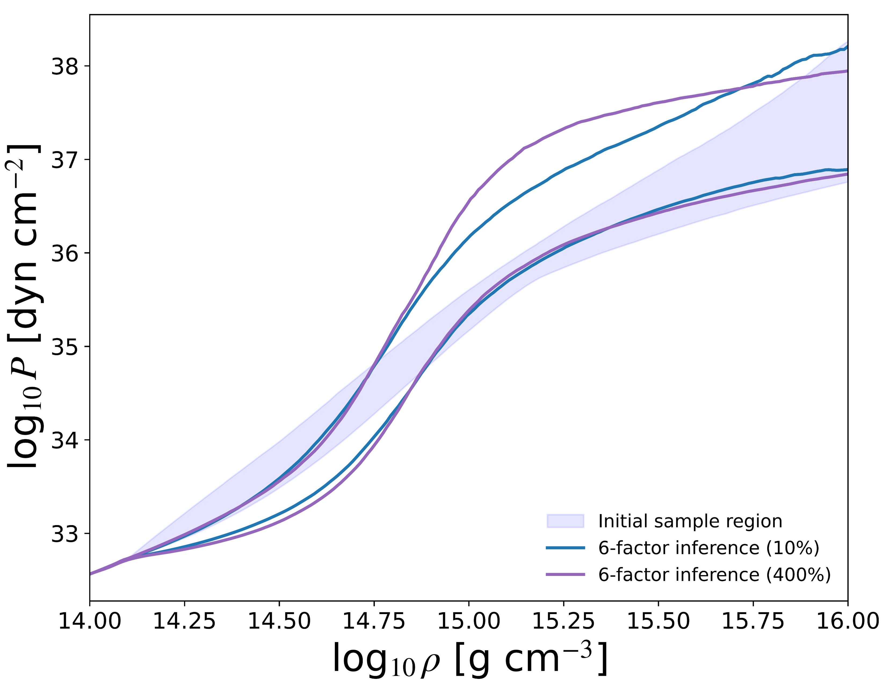
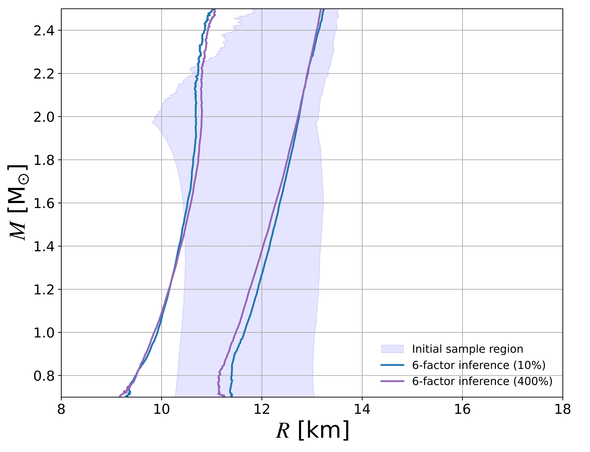
图注：由双中子星、银河系射电与X射线脉冲星、核对称能和GW170817形成的联合六因子状态方程约束，采用四维均匀先验的Γ谱参数化及三维截断高斯双中子星种群先验。蓝线和紫线分别包络参数范围外扩10%与400%时的90%区间；背景与GW170817初始后验样本比较。后验在密度增加时表现出更明显的压强变化，并收紧各质量对应的半径区间。 左图为以g cm⁻³计的密度和以dyn cm⁻²计的压强的常用对数；右图横轴半径（km）、纵轴质量（太阳质量）。
怎么看这张图：两面板分别看压强–密度和质量–半径；变换坐标不等于增加数据，扩边界也改变允许模型集合。较窄区间受X射线高斯近似、共同先验和选用谱族限制，不能只按宽度判断可靠性。 直接支持本文核心结果及其证据边界。
来源与置信度：arXiv HTML；source verified；https://arxiv.org/html/2609.39057v1/figures/PD_final_allcomp.jpg；https://arxiv.org/html/2609.39057v1/figures/MR_final_allcomp.jpg
10. How collective modes terminate in the dispersion relation of neutrino plasmas
- 来源：arXiv / astro-ph.HE
- 链接：https://arxiv.org/abs/2609.38314
- 作者：Damiano F. G. Fiorillo
- 公告 / 来源日期：2026-10-01
- 阅读层级：相关简报
- 评分：novelty 8/10，importance 7/10，relevance 7/10，final 8.30/10
- 推荐理由：有限中微子质量下模式终止与简并分类改进色散分析，属于具体理论工具而非观测发现。
中文题目：中微子味波为何合并或终止：迟致响应的复解析结构决定答案
问题、方法与结论：本文在两味中微子气体的线性响应理论中，区分两条色散分支合并的简并点与阻尼分支撞上支割线的终止点。作者推导迟致介电函数的局部展开，并以慢、快不稳定性的例子验证：非零真空频率通常解除对称轴上的简并，却不普遍消除分支终止；高斯频率分布所显示的光滑延续是整函数性质导致的特例。
意义与贡献：结果帮助判断数值寻根突然失去解究竟来自真实解析结构还是算法失败。快极限中的简并面在一般非零质量情况下至多留下三维波矢空间中的线，故一维轴向计算看不到简并，并不意味着整个三维空间都无简并。
可借鉴之处：洛伦兹频率分布可以解析积分，在线性迟致响应层面等效于具有相应阻尼率的单色分布，可减少数值积分维度。将分布表示成若干洛伦兹项可作为计算工具，但须检查尾部和复平面解析延拓对强阻尼分支的影响。
局限与关注点：这里的等效阻尼不是发现了实际碰撞，也不意味着非线性动力学等价。研究限定于小扰动、连续能量与角分布，没有计算饱和后的味转换或可观测中微子谱。实轴峰附近很相似的分布仍可有完全不同的深负虚频响应；不能把方便的拟合函数生成的全部阻尼分支都赋予天体物理意义。
图5：近似相似的频率分布可有不同的阻尼分支
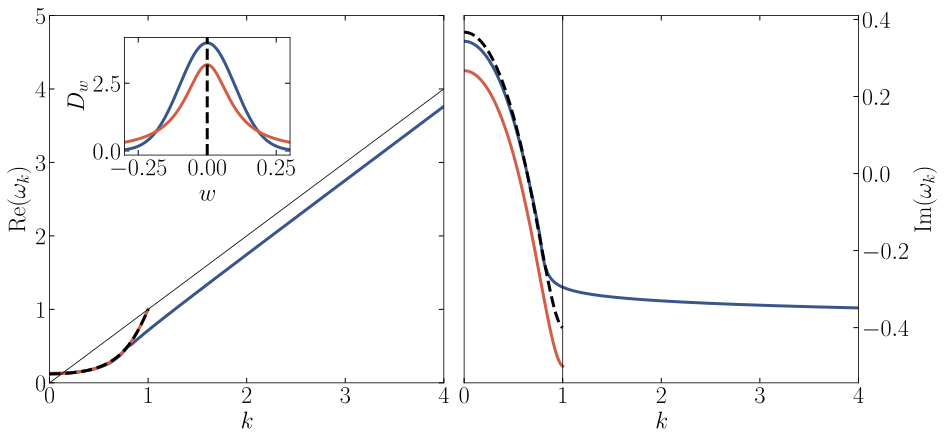
图注：比较频率w=0的单色快极限（黑虚线）、尺度Γ=0.1的高斯分布（蓝）及宽度Γ=0.1的洛伦兹分布（红）；插图展示分布。左、右分别为频率实部和虚部随波数k的变化，左图红线与黑线重合。采用参数D=1、k*=1、γ=0.4；细黑线为光锥。
怎么看这张图：该图是局部色散结构的示例，并非完整超新星输运模拟。洛伦兹解的虚频整体下移，而高斯解可继续；是否终止取决于迟致解析延拓，不能只比较实轴上峰形的相似度。 直接支持本文核心结果及其证据边界。
来源与置信度：arXiv HTML；source verified；https://arxiv.org/html/2609.38314v1/AbruptDisappearanceGaussLorentz.svg
11. Deep radio characterization of the supernova remnant G343.1-00.7
- 来源：arXiv / astro-ph.HE
- 链接：https://arxiv.org/abs/2609.39731
- 作者：S. Loru, A. Ingallinera, C. Trigilio, G. Umana, D. Urošević B. Arbutina, D. Leahy, C. Bordiu, F. Bufano
- 公告 / 来源日期：2026-10-01
- 阅读层级：相关简报
- 评分：novelty 6/10，importance 7/10，relevance 8/10，final 8.05/10
- 推荐理由：ASKAP空间分辨谱识别SNR细丝，提供源环境增量；气体相互作用仍无明确形态证据。
中文题目：G343.1−00.7 的射电谱分解：壳层与投影 H II 区需分开
问题、方法与结论：作者联合 ASKAP/EMU 0.944 GHz 图像、MWA/GLEAM 低频资料与历史通量，测得超新星遗迹 G343.1−00.7 总体谱指数 −0.50±0.01。匹配分辨率后的谱指数图、红外形态及亮度–亮度拟合表明，叠在北侧 H II 区上的部分丝状结构主要是遗迹的同步辐射；两天体本身运动学距离不同，不能因此判为相互作用系统。
意义与贡献：新结果改善了复杂银河面环境中壳层边界和辐射成分的识别，为后续高频射电、偏振及高能分析提供空间模板。东南壳层较平的谱可由附加热辐射解释，但模型选择证据尚弱，不能视为已确认的辐射激波。
可借鉴之处：值得借鉴先统一波束、网格与背景，再比较直接谱指数图和允许非零截距的亮度–亮度关系；后者可削弱弥散背景偏置。作者还排除了缺失大角尺度通量的 MeerKAT 测量及早期主波束标定有问题的 ASKAP 图，避免把仪器差异误判为谱弯曲。
局限与关注点：热加非热模型给出约 37% 的 1 GHz 热份额，但相对单幂律的 ΔBIC 仅约 1，仍需 10–30 GHz 和偏振验证。HI/CO 仅有运动学相容，缺乏明确激波相互作用证据。约 25–30 微高斯磁场、粒子能量与演化年龄依赖能量分配、距离及环境假设；没有伽马探测本身不足以判定轻子辐射占优。
图3：遗迹与 H II 区的空间谱指数
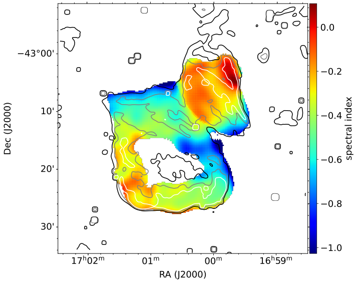
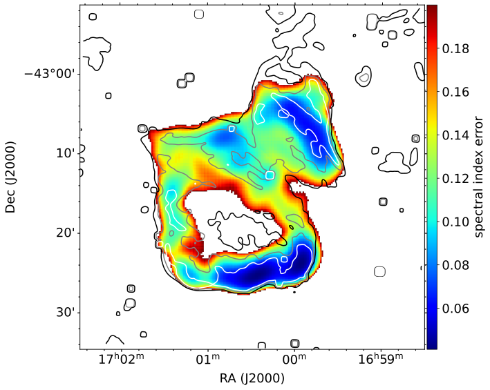
图注：上图为G343.1−00.7的谱指数图，下图为相应误差图，由0.200 GHz GLEAM与0.944 GHz EMU图像得到。等高线标出EMU强度0.0004、0.0015及0.003 Jy/beam。
怎么看这张图：两频图已经匹配波束，误差大于0.2的像素被屏蔽。较平区域可能混有弥散热辐射，须与亮度–亮度拟合结合；图上投影重叠不说明H II区与遗迹位于同一距离。 直接支持本文核心结果及其证据边界。
来源与置信度：arXiv HTML；source verified；https://arxiv.org/html/2609.39731v1/spix_merge_ok_contours.svg；https://arxiv.org/html/2609.39731v1/spix_merge_err_ok2_contours.svg
12. Angular structure of finite-field vacuum birefringence in magnetars
- 来源：arXiv / astro-ph.HE
- 链接：https://arxiv.org/abs/2609.38573
- 作者：Shahram Abbassi, S. R. Valluri
- 公告 / 来源日期：2026-10-01
- 阅读层级：相关简报
- 评分：novelty 7/10，importance 6/10，relevance 8/10，final 8.00/10
- 推荐理由：有限场双折射角向修正给出解析符号和误差，适合精密偏振传播，但总体物理影响较小。
中文题目：磁星真空双折射的角度修正：局部误差不等于可观测偏振变化
问题、方法与结论：作者在局部单圈 Heisenberg–Euler 理论内，检验把垂直传播的有限磁场双折射乘以角度正弦平方的常见近似。解析正系数展开证明，在所研究的正双折射分支上，该分离近似会高估非垂直方向的精确劈裂；相对误差沿磁场方向最大，但该方向的绝对双折射同时趋于零。
意义与贡献：工作将磁场强度修正与角度不可分离修正分清。以 SGR 1806−20 的中心偶极示例，近轴局部误差约 5.17%，20 度发射帽平均约 4.91%，一条近轴径向光线的累积相位误差约 2.30%，显示空间平均和沿途磁场衰减会改变修正的权重。
可借鉴之处：有理化表达式避免两个接近的折射率相减带来的消减误差；固有时积分与特殊函数两套计算相互核查，也为偏振传播程序提供测试基准。实际实现已有响应系数时可直接用精确代数式，无须另做近似角度扫描。
局限与关注点：“精确”仅指保留单圈系数的局部代数结构，不是完整高阶 QED：所保留的部分非线性项与真正双圈贡献同阶，且未含动量色散、热效应及等离子体传播。远处偏振冻结时磁场已很弱，因此不能把表面几个百分点的劈裂修正当作测得偏振角或偏振度同幅变化；偶极和径向光线也属限定几何。
图5：沿途相位与发射区平均的角度修正
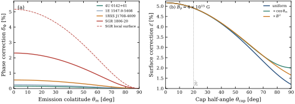
图注：(a)四个源偶极磁场归一值下，径向累计相位误差随发射余纬的变化。虚线为SGR场强的局部表面误差，展示沿射线的几何稀释。(b)SGR级场强中发射帽积分误差对帽大小的依赖，比较三种表面权重。小帽（包括20度）曲线几乎重合，宽发射区分离；半球时分别为1.20%、2.01%、1.65%。 横轴角度单位为度，纵轴为百分比；(b)依次比较均匀、cosθ和B²表面权重。
怎么看这张图：纵轴是近似相对于单圈精确代数模型的误差，不是观测偏振度。沿途磁场迅速减弱使相位修正小于表面值；具体偏振信号仍需包含等离子体、几何与模式转换。 直接支持本文核心结果及其证据边界。
来源与置信度：arXiv HTML；source verified；https://arxiv.org/html/2609.38573v1/fig5_phase_weighting.svg
说明
评分由 LLM 给出初评，再由本地阈值策略过滤；IACT、TeV 伽马射线和高能中微子天文学按重点方向处理。